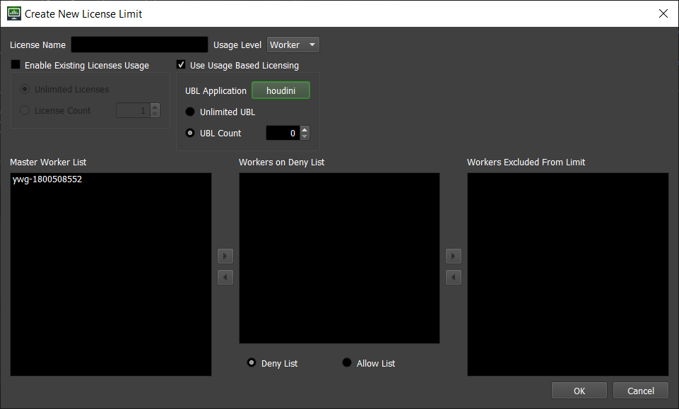

Release Issues¶
Note
This page will include known major issues with Deadline releases starting with Deadline 10.1.14. To see details on new features and bug fixes for each release go to release notes.
Some issues may affect multiple releases.
Unresolved¶
Unresolved issues are those that are still present in the latest Deadline release. The issue can be assumed to exist in all installer versions since the earliest version in which it was detected.
Launching Deadline Monitor in Python 2
If Deadline Monitor is launched in Python 3 and then relaunched in Python 2, it will appear broken. This is due to an incompatibility with how Monitor layouts are stored in Python 2 and Python 3.
Close the broken Monitor and relaunch it in Python 2 again.
Error in 10.1.20.2. and all versions since.
10.1.22.4¶
All Deadline Applications Fail to Launch
Any Deadline application in this version fails to launch if the local calendar is set to anything after July 9th, 2022.This is because a component (which was incorrectly included in this build) time-limited the software to expire on July 9th, 2022.
As a temporary workaround, setting the local calendar to any date prior to July 9th, 2022 will allow Deadline to run again. Ultimately however, we strongly recommend upgrading to 10.1.22.5 which has fixed this issue (and is otherwise identical to 10.1.22.4).
Error in 10.1.22.4.
10.1.20.2¶
Launching Deadline Client Applications on macOS 11 and later
Deadline client applications on version 10.1.20.2 have a known issue on macOS 11 and macOS 12 where the applications will fail to launch properly.Update the deadline client applications to version 10.1.20.3
Error in 10.1.20.2.
Launching Deadline Monitor in Python 2
If Deadline Monitor is launched in Python 3 and then relaunched in Python 2, it will appear broken. This is due to an incompatibility with how Monitor layouts are stored in Python 2 and Python 3.Close the broken Monitor and relaunch it in Python 2 again.
Error in 10.1.20.2. and all versions since.
10.1.19.4¶
Web Service is incompatible with Deadline Python API 10.1.15 and older
Deadline Web Service servers between versions 10.1.16 and 10.1.19 have a known incompatibility with pre-10.1.16 clients. This incompatibility has been fixed in the 10.1.20 server, which can service all client versions.Updating the Deadline Python API client to version 10.1.16 (or newer) or the Web Service server to 10.1.20 (or newer) is required.
Error in 10.1.19.4, 10.1.18.5, 10.1.17.4, 10.1.16.9, 10.1.16.8, 10.1.16.6.
10.1.18.5¶
Web Service is incompatible with Deadline Python API 10.1.15 and older
Deadline Web Service servers between versions 10.1.16 and 10.1.19 have a known incompatibility with pre-10.1.16 clients. This incompatibility has been fixed in the 10.1.20 server, which can service all client versions.Updating the Deadline Python API client to version 10.1.16 (or newer) or the Web Service server to 10.1.20 (or newer) is required.
Error in 10.1.19.4, 10.1.18.5, 10.1.17.4, 10.1.16.9, 10.1.16.8, 10.1.16.6.
10.1.17.4¶
Web Service is incompatible with Deadline Python API 10.1.15 and older
Deadline Web Service servers between versions 10.1.16 and 10.1.19 have a known incompatibility with pre-10.1.16 clients. This incompatibility has been fixed in the 10.1.20 server, which can service all client versions.Updating the Deadline Python API client to version 10.1.16 (or newer) or the Web Service server to 10.1.20 (or newer) is required.
Error in 10.1.19.4, 10.1.18.5, 10.1.17.4, 10.1.16.9, 10.1.16.8, 10.1.16.6.
10.1.16.9¶
Web Service is incompatible with Deadline Python API 10.1.15 and older
Deadline Web Service servers between versions 10.1.16 and 10.1.19 have a known incompatibility with pre-10.1.16 clients. This incompatibility has been fixed in the 10.1.20 server, which can service all client versions.Updating the Deadline Python API client to version 10.1.16 (or newer) or the Web Service server to 10.1.20 (or newer) is required.
Error in 10.1.19.4, 10.1.18.5, 10.1.17.4, 10.1.16.9, 10.1.16.8, 10.1.16.6.
10.1.16.8¶
Web Service is incompatible with Deadline Python API 10.1.15 and older
Deadline Web Service servers between versions 10.1.16 and 10.1.19 have a known incompatibility with pre-10.1.16 clients. This incompatibility has been fixed in the 10.1.20 server, which can service all client versions.Updating the Deadline Python API client to version 10.1.16 (or newer) or the Web Service server to 10.1.20 (or newer) is required.
Error in 10.1.19.4, 10.1.18.5, 10.1.17.4, 10.1.16.9, 10.1.16.8, 10.1.16.6.
10.1.16.6¶
Web Service is incompatible with Deadline Python API 10.1.15 and older
Deadline Web Service servers between versions 10.1.16 and 10.1.19 have a known incompatibility with pre-10.1.16 clients. This incompatibility has been fixed in the 10.1.20 server, which can service all client versions.Updating the Deadline Python API client to version 10.1.16 (or newer) or the Web Service server to 10.1.20 (or newer) is required.
Error in 10.1.19.4, 10.1.18.5, 10.1.17.4, 10.1.16.9, 10.1.16.8, 10.1.16.6.
Web Service certificate generation error
Deadline 10.1.16 has a known issue that occurs during Deadline Client installation for machines running Remote Connection Server or Web Service. When selecting 'Remote Connection Server' and 'Deadline Web Service' in the 'Select Components' window there are two ways to hit an issue that will cause installer to fail to install Deadline Web Service certificates.Unselect ‘Require external Clients to use TLS’ for RCS and later select ‘Require Web Service Clients to use TLS’
Select ‘Require external Clients to use TLS’ for RCS and on next page select ‘Use Existing Certificates’ for ‘HTTPS Server Settings’ window. Later select ‘Require Web Service Clients to use TLS’.
When upgrading existing Deadline Client and keeping the same RCS certificates, avoid generating new certificates for Web Service. When installing a new Deadline Client, avoid generating Web Service certificates when installing RCS without any certificates.
Error in 10.1.16.6.
‘Workers Excluded from Limit’ error
This is for License Limits with 'Use Usage Based Licensing' selected with 'UBL Application' product one of arnold, maya, max, renderman. These UBL applications can only be run on EC2s.When putting an on premise Worker on the ‘Workers Excluded From Limit’ list, the on premise Worker will ignore jobs with this Limit.
Error in 10.1.16.6, 10.1.15.2, 10.1.14.5, 10.1.14.4, 10.1.14.3.
Version mismatch
During installation the version listed is 10.1.16.5. This will not impact your installation.Error in 10.1.16.6.
10.1.15.2¶
‘Workers Excluded from Limit’ error
This is for License Limits with 'Use Usage Based Licensing' selected with 'UBL Application' product one of arnold, maya, max, renderman. These UBL applications can only be run on EC2s.When putting an on premise Worker on the ‘Workers Excluded From Limit’ list, the on premise Worker will ignore jobs with this Limit.
Error in 10.1.16.6, 10.1.15.2, 10.1.14.5, 10.1.14.4, 10.1.14.3.
10.1.14.5¶
Cinema 4D Submitter
Deadline 10.1.14 has a known issue that causes the Cinema 4D integrated submitter to not show up in Cinema 4D R22 and lower. This can be fixed by following the instructions located on this `forum postError in 10.1.14.5, 10.1.14.4, 10.1.14.3.
‘Workers Excluded from Limit’ error
This is for License Limits with 'Use Usage Based Licensing' selected with 'UBL Application' product one of arnold, maya, max, renderman. These UBL applications can only be run on EC2s.When putting an on premise Worker on the ‘Workers Excluded From Limit’ list, the on premise Worker will ignore jobs with this Limit.
Error in 10.1.16.6, 10.1.15.2, 10.1.14.5, 10.1.14.4, 10.1.14.3.
10.1.14.4¶
Web Service fails to load Python
The Deadline Web Service is unable to load Python.Runtime.Thinkbox.dll.Error in 10.1.14.4, 10.1.14.3.
Cinema 4D Submitter
Deadline 10.1.14 has a known issue that causes the Cinema 4D integrated submitter to not show up in Cinema 4D R22 and lower. This can be fixed by following the instructions located on this `forum postError in 10.1.14.5, 10.1.14.4, 10.1.14.3.
‘Workers Excluded from Limit’ error
This is for License Limits with 'Use Usage Based Licensing' selected with 'UBL Application' product one of arnold, maya, max, renderman. These UBL applications can only be run on EC2s.When putting an on premise Worker on the ‘Workers Excluded From Limit’ list, the on premise Worker will ignore jobs with this Limit.
Error in 10.1.16.6, 10.1.15.2, 10.1.14.5, 10.1.14.4, 10.1.14.3.
10.1.14.3¶
Floating License error
Deadline Worker will fail to checkout floating license.Error in 10.1.14.3.
Web Service fails to load Python
The Deadline Web Service is unable to load Python.Runtime.Thinkbox.dll.Error in 10.1.14.4, 10.1.14.3.
Cinema 4D Submitter
Deadline 10.1.14 has a known issue that causes the Cinema 4D integrated submitter to not show up in Cinema 4D R22 and lower. This can be fixed by following the instructions located on this `forum postError in 10.1.14.5, 10.1.14.4, 10.1.14.3.
‘Workers Excluded from Limit’ error
This is for License Limits with 'Use Usage Based Licensing' selected with 'UBL Application' product one of arnold, maya, max, renderman. These UBL applications can only be run on EC2s.When putting an on premise Worker on the ‘Workers Excluded From Limit’ list, the on premise Worker will ignore jobs with this Limit.
Error in 10.1.16.6, 10.1.15.2, 10.1.14.5, 10.1.14.4, 10.1.14.3.